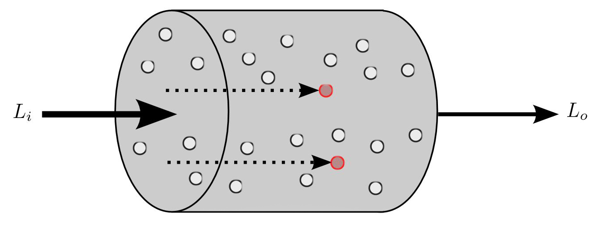
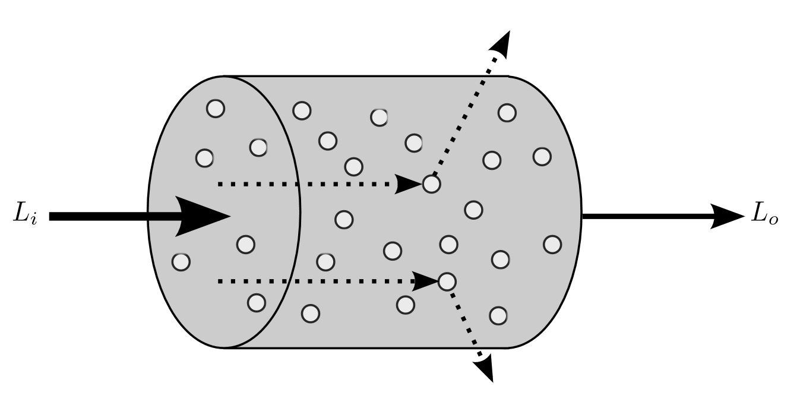
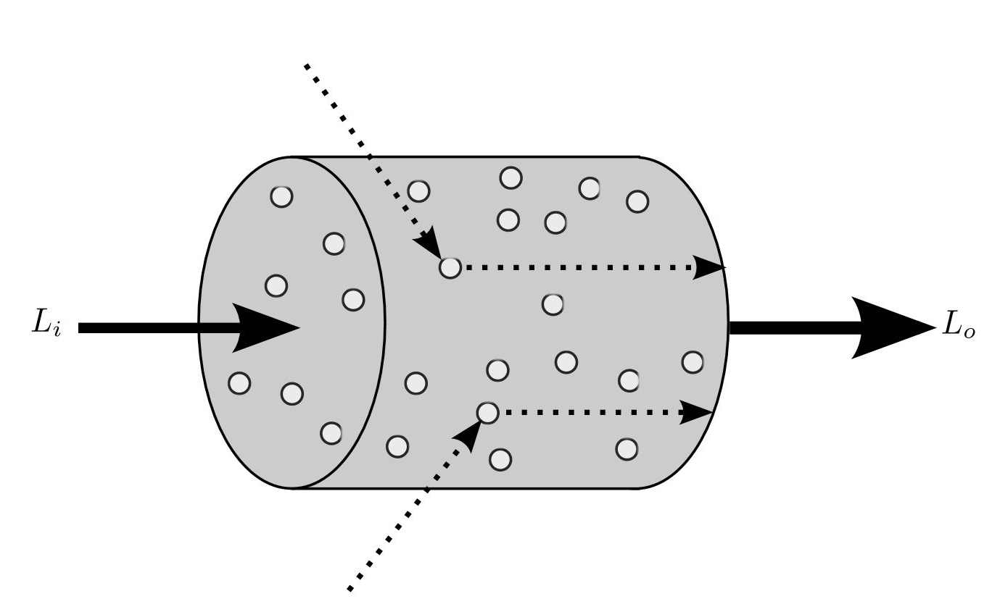
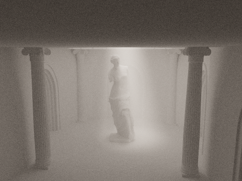
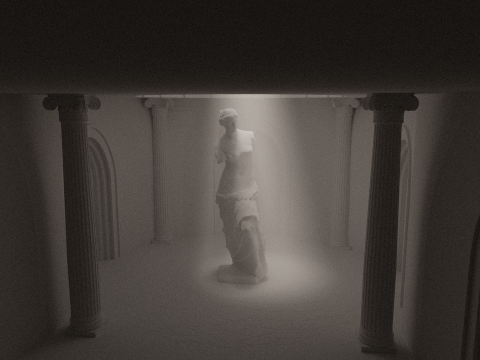
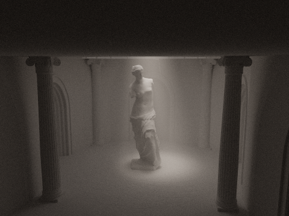
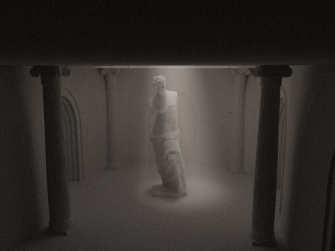

|
|
|
|
|
The god ray is a visually appealing and intense lighting effect that can be seen in the rendering of interior architectural scenes with limited direct illumination through a portal. The paper proposes a technique for using the the GPU to efficiently and progressively render god rays in these types of scenes using brute force Monte Carlo integration of a volumetric rendering equation. A CUDA rendering application called godRay was produced with the ability to control sun and sky lighting and participating media parameters in a interior temple scene. The discussion is focused on the caparison of these parameters with respect to the physically based rendering of god rays.
God rays, also known as Crepuscular Rays in atmospheric optics, are light beams that appear to radiate from an intense light source in the scene and are particularly apparent when a considerable portion of the scene is occluded from the this light source. In exterior scenes god rays may be seen as beams of light streaming through dense clouds or physical openings in geometry such as between buildings or trees. Interior scenes can also exhibit god rays such as in the image of the pantheon, a classical roman architecture that is day-lit by a single occulus at the top of the dome. In these cases, the viewer of the image is drawn to the phenomenological qualities of the space and the connection to this exterior light source. In the physical environment, god rays are usually produced by the intensity sun of the sun as a single light source in contrast to the much less intense sky dome or skylight. The rays appear as if they converge to a point, but in the case of sunlight are near parallel. The tapering or slight conical appearance of these light rays is an effect often caused by perspective convergence or in the case of computer rendering linear perspective.
God rays are made visible in the scene through the interaction of light with participating media or atmospheric particles such as smoke, fog, or haze. It is often the case that in architectural renderings of an interior scene, god rays appear in a homogeneous media as the interacting particles in the volume of the space are well mixed. However interactions with media of heterogeneous density are possible as well. In this paper we will be considering only the homogeneous case due to the efficiency it affords when sampling the media.
For interior architectural scenes with significant indirect lighting and global illumination path tracing techniques can provided excellent results. In order to maintain an unbiased solution we have used a brute force Monte Carlo integrator to numerically solve the rendering equations. The brute force approach to the rendering equation requires a significantly greater amount of pixel samples to resolve the scene, especially in areas only lit by indirect illumination. The increase in sampling can greatly increase the rendering times of the scene. In scenes with participating media, the sampling and rendering times can increase even further. To account for this, we have developed the rendering application on the GPU using Nvidia CUDA. Both the direct illumination and indirect illumination integrators are developed in CUDA kernels to take advantage of the massive core count on the GPU. The test images for this paper were rendered with two Nvidia Titan X GPUs with a combined count of 7680 CUDA cores. The scene bounding volume hierarchy (BVH) was built using the Nvidia OptiX SDK.
The rendering equation for godRay is formaly based on the rendering equation proposed by Kajiya Reference with adaptations for volumetric rendering in homogeneous participating media discussed in chapter 4 of Wojciech Jarosz
thesis Reference. This project maintains an unbiased approach using monte carlo techniques as presented
by Veach Reference.
|

|

|

|
where the differential equation of extinction can be described by
The fraction of radiance that is transmitted between two points along the ray path, transmittance(
However, since we are considering our godRay scenes to contain only homogenuos media where the extintion coefficient
is constant, we can significanly simplify the tranmittance equation to beer's law where
The model for in-scattering can be described by the differential equation where incoming radiation from all solid angles
The phase function, similar to the BSDF function for surface interactions,
reference which allows for a
single asymmetry value
In godRay, in order to focus on the volumetric effects of the god ray we are only considering a basic Lambertian
bidirectional reflectance distribution function or BRDF reference representing an ideal matte surface.
While the Lambertian model is not physically based it provides a significant simplification of the model. For a more
physically based diffuse surface, the microfacet model reference could be considered. In our case however
The volume rendering equation for radiance
reference. The radiance for the
path is then scaled according to the transmittance function for the atmospheric media along the path length. The
following volume rendering equation adapts the Kajiya model to account for scattering events that occur within the
globally defined atmospheric media.
A sample scene was constructed for godRay where the interior of a faux classical temple interior receives illumination from a procedurally generated exterior sun and sky light model. The only light on the interior passes through a single occulus at the top of a dome centered above a sculpture.
The lighting for the sample temple scene uses two light sources procedurally generated from a Preetham Sun and Sky model
reference. While the preetham model is not physically acurate, it provides a copmutationaly cheap method
of calculating an infinite skylight that can be parameterized through a sun azimuth and sun altitude. The sunlight
was modeled as an infinte directional light with a small radius based on the suns solid angle.
The temple geometry was modeled in NURBS and exported into an OBJ mesh format for import into the godRay rendering
engine. A section of the temple scene geometry is diagramed in figure. Triangle intersection test are
used in the BVH ray intersection accelerator. A Venus de milo mesh file was used as the central piece under
the dome and occulus to allow for the god ray to cast onto. The mesh file is based on a 3d scan of the original sculpture
reference.
The rendering equation for the godRay engine was solved through brute force Monte Carlo integration. Pixel samples
were distributed across the CUDA cores and collected into an accumulation buffer. godRay uses progressive
rendering without tiling, where pixel samples will continue to accumulate when running the application in OpenGL
with the GUI, or can be specified though arguments if run without the GUI on the command line. Figure describes the general path tracing procedure. Direct illumination from the sun was sampled at all scatter events
while the skylight contribution was included only in the indirect illumination path when an intersection miss occurred
with the geometry.
Sampleing of the of the global illumination path is done through russian roulette termination of the resursive ray depth.
The technique used follows Veach's discription closly reference.
Sampling of the scatter events in the atmospheric media first require an intersection test of the ray with the scene
geometry where
equation describing the extintion in the media where
with a PDF
Sampling of the solid angle for surface scatter events uses cosine weighted hemisphere sampling so that more sampling
occurs in areas of the hemisphere where more total irrandiance is likely to come from. The pdf is:
Given that the phase function is normalized the PDF is the evaluation of the function
When considering the direct illumination sampling of the sunlight is done through uniform disk sampling based off of the radius of the modeled sun.
Due to limits on the stack depth in CUDA, implementing the rendering equation for godRay in requires that the
path tracing be done iteratively rather than recursively. This requires that the throughput of atmospheric attenuation,
tr and global illumination path weight, beta, be separately tracked through each iteration
of the main global illumination rendering loop. The algorithm described is written in generalized pseudo code, however
you can refer to the CUDA source code for specific implementation syntax and details of all functions.
Main rendering loop in pathtracer.cu
// return radiance of the pixel sample
float3 renderPixel(float2 pixel_index) {
unsigned int seed;
// Sample the Current Pixel
float2 pixel_sample = samplePixel(seed);
// Generate Camera Ray for current Sample
float3 ray_origin;
float3 ray_dir;
genPinholeCameraRay(&ray_origin, &ray_dir, pixel_sample);
// Per Ray Data Structure
PerRayData_radiance prd;
prd.beta = float3(1.0f);
prd.tr = float3(1.0f);
prd.radiance = float3(0.0f);
// Next ray to be traced
prd.origin = make_float3(0.0f);
prd.direction = make_float3(0.0f);
// Accumulated Radiance for the Sample
float3 L = make_float3(0.0f);
// Main Global Illumination Pathtrace
for (int i = 0; i < max_depth; ++i) {
// Generate Ray for current ray segment
Ray ray(ray_origin, ray_dir, scene_epsilon);
// Trace ray and intersect with scene geometry
rtTrace(top_object, ray, prd);
// rtTrace calls a new CUDA material kernel depending on ray intersection. This kernel is defined in material.cu
// prd struct is updated on return from rtTrace
// Add transmittance radiance from path segment to L
L += prd.tr * prd.radiance;
// russian roulette termination | pbrt 879
if (prd.depth > min_depth) {
float q = 1.0f - prd.beta.y;
if (q < 0.05f) q = 0.05f;
if (rnd(prd.seed) < q)
break;
// update beta to account for russian roulette termination probability
prd.beta /= 1.0f - q;
}
// Update ray data for the next path segment
ray_origin = prd.origin;
ray_dir = prd.direction;
}
return L;
}
material.cu defines the routines for updating per ray data. All materials in godRay are Lambertian diffuse materials. Atmospheric scattering is accounted for as a conditional test in the material shader. If atmospheric scattering occurs, the intersection is updated and estimated direct lighting is computed according to the intersection type (atmospheric or diffuse).
// Lambertian Diffuse Intersection Kernel
void diffuse_hit_radiance() {
// Find the distance to the closest intersection
const float3 fhp = ray.origin + t_hit * ray.direction;
float isect_dist = length(fhp - ray.origin);
// Determine if scatter occured in atmosphere
if (atmos_scatter(prd_radiance.seed, isect_dist)) {
// Handle Atmosphere scatter
// -------------------------
// Update Intersection
float3 isect = ray.origin + isect_dist * ray.direction;
// Esitmate Direct Lighting from Sun
prd.radiance = prd.beta * estimate_direct_light(isect, ATMOS, -prd_.direction);
// Compute transmittance and atmopsheric PDF
float3 transmittance = expf(-atmos_sigma_t * isect_dist);
float3 density = atmos_sigma_t * transmittance;
float atmos_pdf = (density.x + density.y + density.z) / 3.0f;
// Set weighting for atmospheric transmittance
prd.tr *= transmittance * atmos_sigma_s / atmos_pdf;
// Sample solid angle of atmos scatter bounce
float3 w_in = float3(0.0f);
float p *= hg_sample_phase(atmos_g, -ray.direction, w_in);
// Set next ray bounce
prd.origin = isect;
prd.direction = w_in;
}
else {
// Handle scatting at point on diffuse surface
// -------------------------------------------
// Compute the transmittance and sampleing density
float3 transmittance = expf(-atmos_sigma_t * isect_dist);
float atmos_pdf = (transmittance.x + transmittance.y + transmittance.z) / 3.0f;
// Return weighting factor for scattering from surface and atmosphere
prd.tr *= transmittance / atmos_pdf;
// Calculate world surface normal
const float3 ffnormal = faceforward(world_shading_normal, -ray.direction, world_geometric_normal);
// Sample surface solid angle
float3 bsdf_f = Kd / M_PIf;
float bsdf_pdf;
float3 w_in = cwh_sample(bsdf_pdf);
// Set next ray bounce
prd.origin = fhp;
prd.direction = w_in;
// Esitmate Direct Lighting
prd.radiance = prd.beta * estimate_direct_light(fhp, DIFFUSE, -prd_radiance.direction);
prd.beta *= bsdf_f * dot(ffnormal, w_in) / bsdf_pdf;
}
Images were generated for all of the parameters concerning the rendering of the god ray in the scene. The following image sequences describe the variation of parameter values and the effect on the scene image.
The extinction coefficient increases the probability of scattering, as well as increases the attenuation rate of rays as they pass through a media. In the figures below we can observe the scene becoming darker as the extinction coefficient increases.
|
|
|
|
|
|
The Scatter coefficient affects the amount scattered into a differential segment of media. This is different than the out-scatter coefficient which is bundled together with the extinction coefficient. The in-scatter coefficient, as seen below, changes how much light is bouncing around within the scene. A larger scattering coefficient will produce a brighter image, as more light enters the dark room where the statue is.
|
|

|
|
|
|
The scattering phase function coefficient is the coefficient
|

|

|

|
|
|

|
|
The helios coefficient is an atmospheric radiance amplifier we added to the monte carlo integration. This helps produce a sharper contrast from areas where scattering is not taking place as often. The below images demonstrates the effect, where the coefficient is set to 1 we have a nearly dark room as scattering events in the atmosphere contribute very little radiance. A higher helios coefficient will bring out the god ray effect, as scattering events become more apparent.
|
|
|
|
|
|
|
|
|
|
|
|
We can also observe the effects of the god ray at various angles throughout the scene by rotating the sun and changing the sun's elevation. Observe the following video clips for pre-rendered scenes of the light changes.
The authors would like to thank Professor Ren Ng of UC Berkeley’s Foundations of Computer Graphics course.
[1] Wojciech Jarosz. 2008. Efcient Monte Carlo Methods for Light Transport in Scattering Media. Ph.D. Dissertation. UC San Diego, La Jolla, CA, USA. Advisor(s). Henrik Wann Jensen and Mathias Zwicker.
[2] James T. Kajiya. 1986. Te Rendering Equation. SIGGRAPH Comput. Graph. 20, 4 (Aug. 1986), 143–150. htps://doi.org/10.1145/15886.15902
[3] A.J.Preetham, PeterShirley, andBrianSmits.1999. APracticalAnalyticModelfor Daylight. In Proceedings of the 26th Annual Conference on Computer Graphics and Interactive Techniques (SIGGRAPH ’99). ACM Press/Addison-Wesley Publishing Co., New York, NY, USA, 91–100. htps://doi.org/10.1145/311535.311545
[4] Dominique Toublanc. 1996. Henyey–Greenstein and Mie phase functions in Monte Carlo radiative transfer computations. Appl. Opt. 35, 18 (Jun 1996), 3270–3274. htps://doi.org/10.1364/AO.35.003270
[5] Eric Veach and Leonidas J. Guibas. 1997. Metropolis Light Transport. In Computer Graphics (SIGGRAPH ’97 Proceedings. Addison Wesley, 65–76.